A2B..........An-1B] is known as state controllability matrix
.
A2B..........An-1B] is known as state controllability matrix
.
Abstract
This is the case where we would learn how to design a mobile inverted pendulum in matlab will talk about a lot of things which will be needed to understand the concept, together with that I will also provide the link of resource where you can study about these things these are for quick refrence simple guide which will lead us in making of our robot “E”
A system is said to be controllable at time t0 if it is possible by means
of an unconstrained control vector to transfer the system from any
initial state x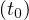 to any other state x(t1) in a finite interval of
time.
Matrix [BABA2B..........An-1B] is known as state controllability matrix
.
The rank of this matrix should be n
Output controllability generally means, that we can steer output of dynamical system independently of its state vector. A system is said to be completely output controllable if it is possible to construct an unconstrained control vector u(t) that will transfer any given initial output y at t0 to any final output y at t1 in a finite time interval t0 to t1 .
Outtput controllability matrix oC =
[CB CAB . . . CAn-1B D] and it is obtained the following result. Dynamical system is output controllable if and only if rank oC = p
A system is said to be observable at time t0 if, with the system in state x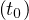, it is possible to determine this state from the observation of the output over a finite time interval.The system is said to be completely observable if every state xAt 0 B can be determined from the observation of y(t) over a finite time interval, t0 to t1 . The system is, therefor, completely observable if every transition of the state eventually affects every ele- ment of the output vector.
A system is completely observable if the rank of the matrix
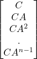 is n
Matrix [B AB
AB A2B
A2B ..........An-1B] is known as controllability matrix.
..........An-1B] is known as controllability matrix.
High level description:
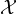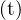 = ∫ 0teAξBBTeATξ dξ ϵℝnxn
X(t) is known as Controllability Gramian.
This measure has physical meaning of minimum input energy to change the states. However, it is hard to use this method for unstable systems because the steady-state value of Gramian cannot be defined.
single value decomposition:
Xtζ=λζ
The eigen values of this matrix will be positive.
“The eigen vectors corresponding to the biggest eigen value are the most controllable directions in state space”.
In matlab a single line formula will give the controllability matrix
ctrb(A,B)
rank of this matrix should be n in our case it should be 4
obsv(A,C) will give the observability matrix for the system and for the specific combination of output.
rank of this matrix tell us that if the system is observable or not.
Result:
In this we see that if measure the position of the cart then we can observe or say estimate the other states from this this output.
But in the other case if we try to estimate other states from pendulum position then it is not possible.
Reason:
Upon seeing the observable matrix we see that first column of the matrix is zero the reason is that state position is independent from other states it does not depend on the states . So other states does not give any information of this particular state ,So we need to always find the postion state from sensor .
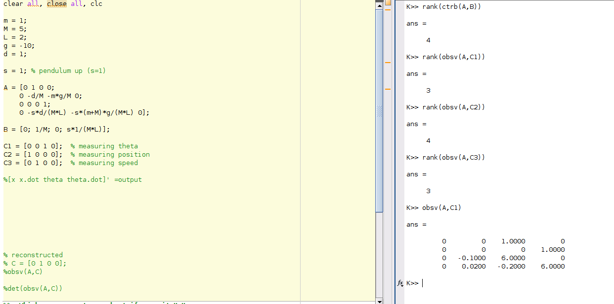
Lets take another case in this case we dont want to control the position of the cart , It is free to move around the room but we do need to control the other states viz [speed, tilt angle of pendulum, angular rate of falling of pendulum]
In general case we may want to have speed=0;tilt angle=180; angular rate=0;
lets see the observability and controllability in this case
Here order of the system is 3
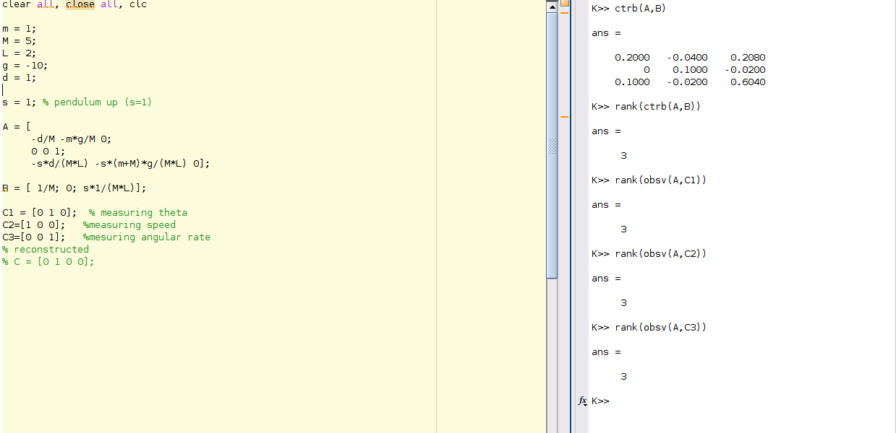
Here we see that system is both observable and controllable both.
Abstract
One the the thing that I like about the working in State space is that we work directly in time domain. We can easily interpret that the output of the system with respect to time .
Here I touch upon the various Basic Ideas that how can we control the closed system varoious method will be discussed in this section.
We assume that all state variables are measurable and are available for feedback. It can be shown that if the system considered is completely state controllable, then poles of the closed-loop system may be placed at any desired locations by means of state feedback through an appropriate state feedback gain matrix.
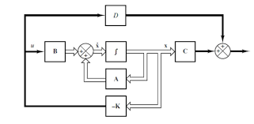
u=-kx
k=[0 0 0 . . .. .. ..1][B : AB : A2B :...........:An-1B]-1∅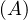
where ∅ = a3 I + a2 A + a1 A2 + A3
and a3,a2,a1 are the coffecints of desired cahracterstics equation having desired poles.
One may ask that how do we determined the position of poles?
One can estimate or can approximate the dominant desired poles from the root locus .Other roots can act as a non dominant poles.
In matlab we will use place command and to get the gain matrix k ,then we will see the eigen values of the modified sytem matrix viz A-B*k
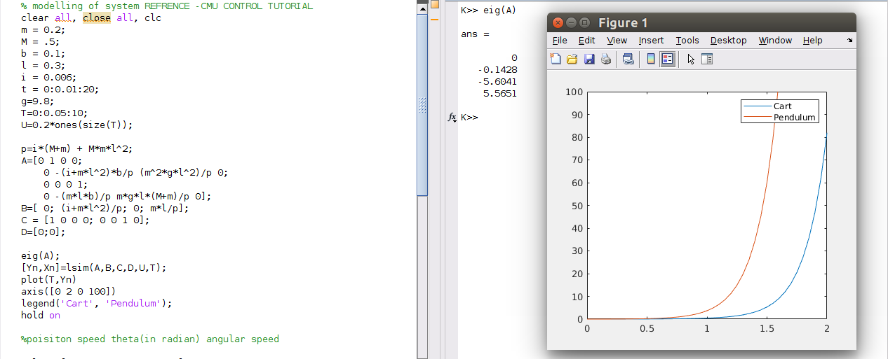
one eigen values of the system matrix is at positive half of complex plane . So any input to the system will result in the un-stability in the system.
here input to the system is the step input having magnitude of 0.02.
Next I place the eigen values of the system randomly at left of complex plane without any performance criteria and then i have checked the system stability means either the system is stable or system converges to the values viz position at -0.06 and pedulum position at at -0.01.
Abstract
I WILL USE TWO METHODS TO GET RID OF STEADY STATE ERROR
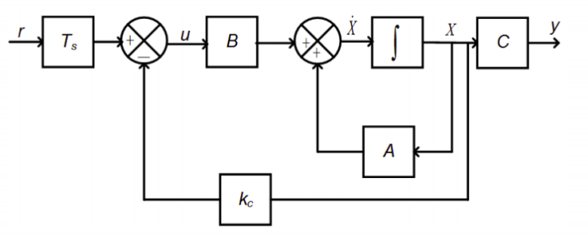
By choosing the appropriate Ts Matrix the steady state error can be made zero .
Ts=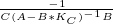
Note that this development assumed that r was constant, but it could also be used where r is a slowly time-varying command.
THE PICTURE BELOW SHOWS THE OUTPUT RESPONSE WITH MODIFYING THE CONTROL .u = -k * x + Ts * r
In the following program I wanted to eliminate the error from pendulum position but it also lead the error in cart position near to zero.
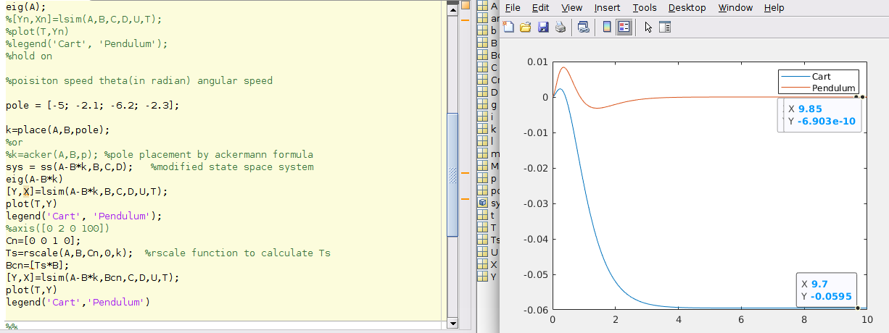
Picture Below shows the output of cart-pendulum system when without error elimination
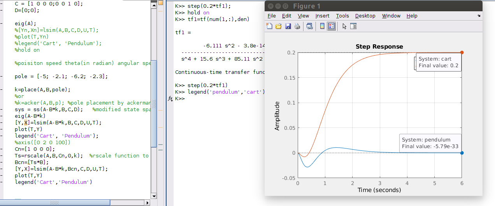